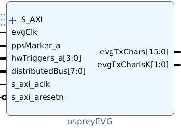

| Name |
Clock |
Description |
| S_AXI |
s_axi_aclk |
AXI4-Lite port. |
| evgClk |
– |
Transmitter clock from
multi-gigabit transceiver. |
| s_axi_aclk |
– |
Clock for AXI4-lite port. |
| ppsMarker_a |
_ |
Pulse-per second marker.
The time stamp seconds are incremented and the time stamp
ticks cleared on the rising edge of this signal.
Asynchronous to evgClk but duration must be at least two
evgClk cycles. |
| hwTriggers_a |
– |
Hardware trigger inputs. An event code can be transmitted on either edge. Asynchronous to evgClk but duration must be at least two evgClk cycles. |
| distributedBus |
evgClk | Sampled and synchronized on
rising edge of evgClk. Transmitted on every other
evgClk. |
| s_axi_aresetn |
s_axi_aclk |
Active-low reset input.
Resets all firmware. |
| evgTxChars |
evgClk | Multi-gigabit transceiver
transmit data. Event codes and K28.5 alignment
commas are sent in the most significant eight
bits. Distributed bus and distributed data values
are sent in the least significant eight bits. |
| evgTxCharIsK |
evgClk | Multi-gigabit transceiver transmit data modifiers. |
The status of the event generator is returned by
int ospreyEVGStatus(void);
Returns the event generator status word:
| Bit(s) |
Description |
| 0 | Set when the pulse-per-second marker is valid. |
| 1 | Set when the event generator time stamp seconds are valid. This bit will remain cleared until the pulse-per-second marker is valid and the POSIX seconds have been set. An invalid pulse-per-second marker will clear this bit until the pulse-per-second marker is valid and the POSIX seconds have again been set. |
| 8–11 | Four bit field holding the
number of hardware trigger outputs. |
| 12–15 | Four bit field holding the number of timer event sources. |
| 16 | Set when the event sequencer is armed. |
| 17 | Set when the event sequencer is active. |
| 20 | Changes state on each rising
edge of the ppsMarker_a input. |
The corresponding header definitions are:
#define
OSPREY_EVG_STATUS_PPS_TOGGLE
0x100000
#define OSPREY_EVG_STATUS_SEQUENCER_ACTIVE 0x20000
#define
OSPREY_EVG_STATUS_SEQUENCER_ARMED 0x10000
#define
OSPREY_EVG_TIMER_COUNT_MASK
0xF000
#define
OSPREY_EVG_TIMER_COUNT_SHIFT
12
#define
OSPREY_EVG_HW_TRIG_COUNT_MASK
0xF00
#define
OSPREY_EVG_HW_TRIG_COUNT_SHIFT 8
#define
OSPREY_EVG_STATUS_TIME_VALID
0x02
#define
OSPREY_EVG_STATUS_PPS_VALID
0x01
The time of day sent by the event generator is
initialized by invoking
int ospreyEVGSetSeconds(uint32_t
posixSeconds);
Once set the seconds value is incremented by each rising
edge of the PPS marker.
The rate at which heartbeat events are generated is
the evgClk divided by the divisor set by invoking
int ospreyEVGSetHeartbeatDivisor(uint32_t
divisor);
The event and rate at which timer-requested events
are generated are set by invoking
int ospreyEVGSetTimerEvent(int
index, int evCode);
int ospreyEVGSetTimerDivisor(int
index, uint32_t divisor);
The rate is the evgClk divided by by the
specified divisor. An index value of 0 corresponds
to the first timer. An event code of 0 disables the
associated timer. A divisor less than or equal to 1
sets the divisor to its maximum value (2^32-1).
The event and rate at which timer-requested events
are generated are set by invoking
int ospreyEVGSetHwTriggerEvent(int
index, int evCode);
An index value of 0 sets the event code to
be triggered by a rising edge on the first hardware
trigger input.
An
index value of 1 sets the event code to be
triggered by a falling edge on the first hardware
trigger input.
An index value of 2 sets the event code to
be triggered by a rising edge on the second hardware
trigger input, and so on.
An event code of 0 results in no event being triggered by
the associated edge and input.
An arbitrary event code is transmitted by invoking
int ospreyEVGSendSoftwareEvent(int
index, int evCode);
If multiple
event sources make simultaneous requests the event from the
lower priority source will be delayed and emitted at the next
free slot, in most cases. The event source priorities are:
The longin record status holds the status register contents
described above.
The rate at which heartbeat events are generated is
the evgClk divided by by the divisor set by the hbDivisor longout
record.
The rate
at which timer-requested events are generated is
the evgClk divided by by the TMR:n:divisor longout
records, where n
is 1 or 2. The event code emitted is set by
the TMR:n:event longout
records. An
event code of 0 disables the associated timer. A
divisor less than or equal to 1 sets the divisor to its
maximum value (2^32-1).
The event code emitted on the edge of the signal at each hardware trigger input is set by the TRIG:n:rise or TRIG:n:fall longout records where n ranges from 1 through 4. An event code of 0 disables the associated trigger.
An arbitrary event code is transmitted by writing the
code to the swEvent
longout record.